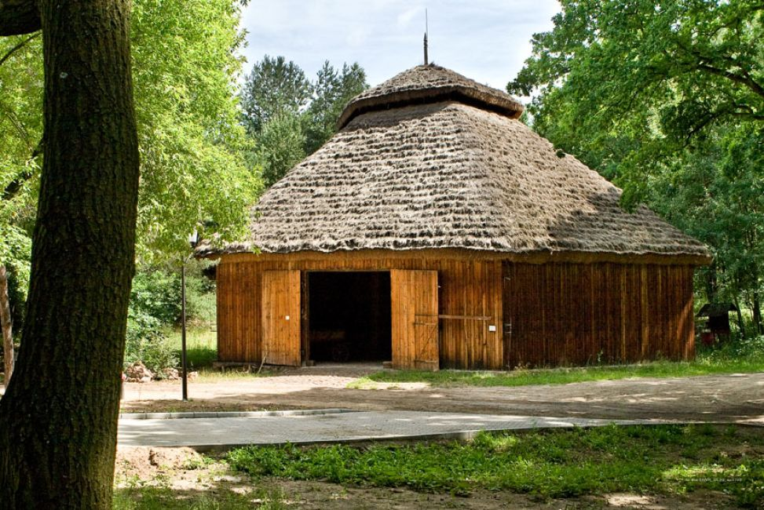
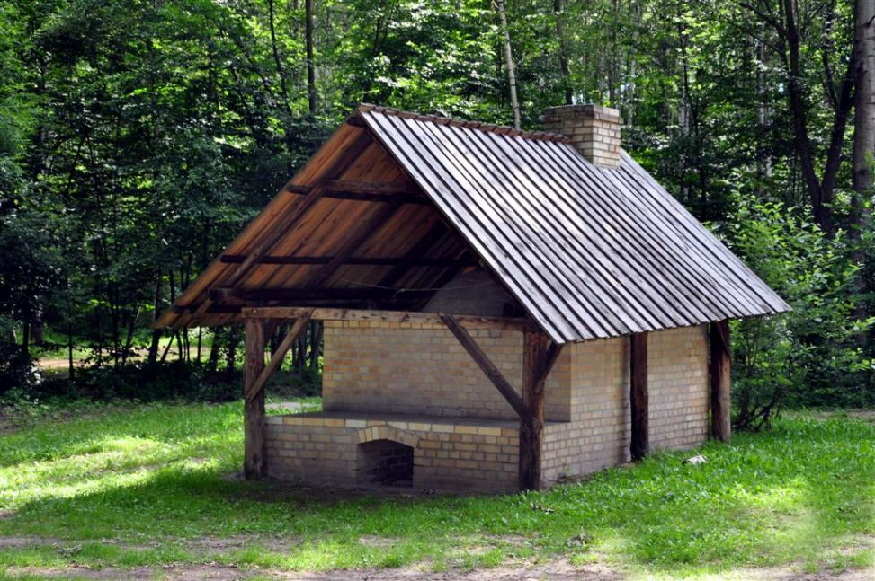
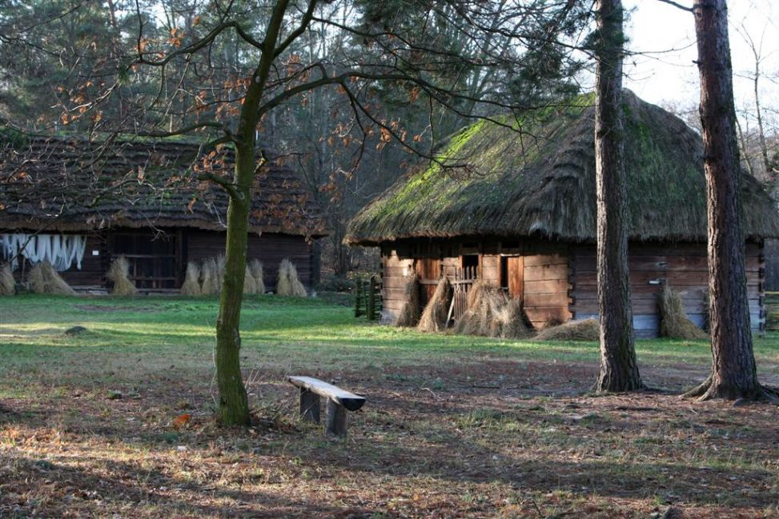
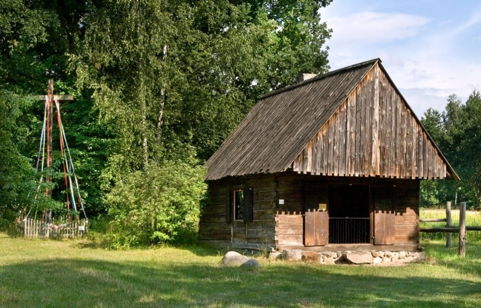
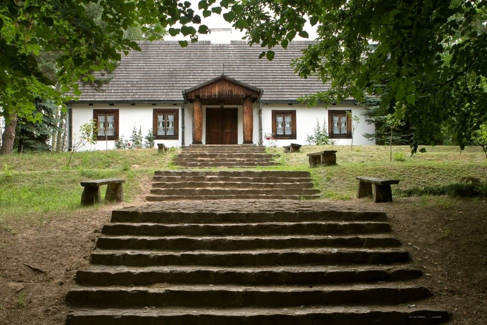
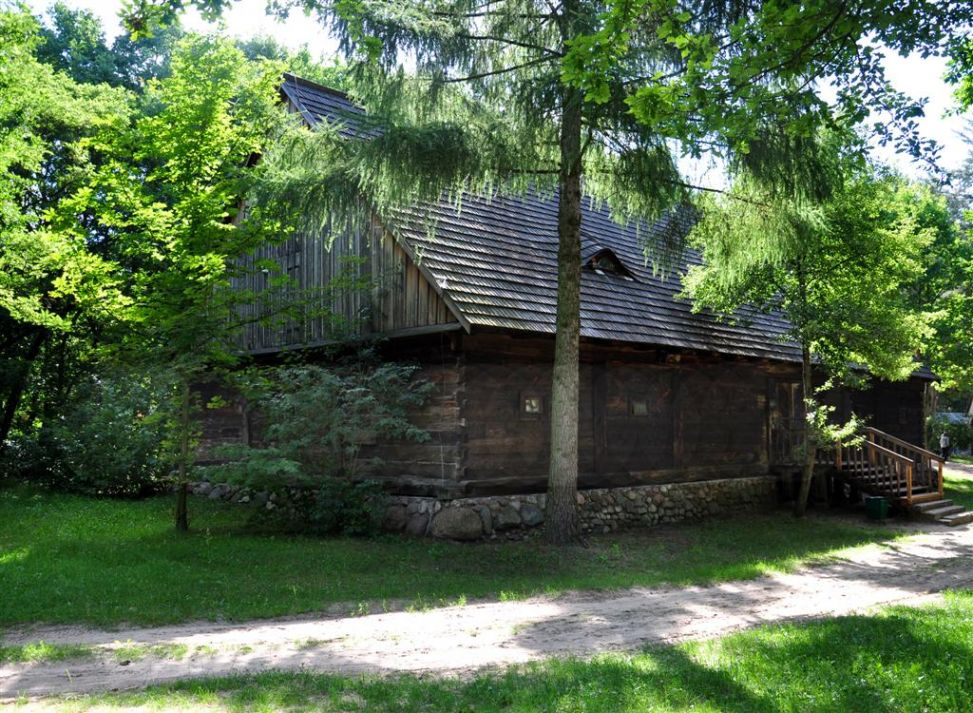
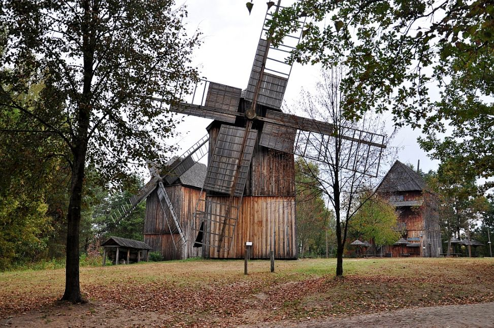
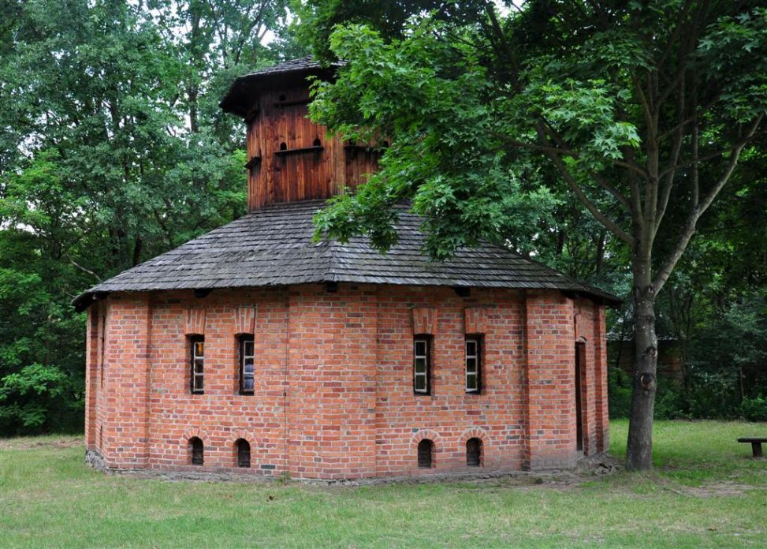

Muzeum Wsi Radomskiej powstało w 1977 roku.
Główną rolą placówki jest gromadzenie i prezentacja zabytków architektury ludowej oraz domów bogatszych mieszkańców.
Na terenie Muzeum wyznaczono ścieżkę przyrodniczą biegnącą pomostami ponad mokradłami. Nad jednym ze stawów znajduje się wieża widokowa. Skansen ma powierzchnię 32,5 hektarów.
| Stodoła z Grójca | Piec Garncarski | Zagroda z Jastrzębi | Kuźnia z Trębowca |
| Dwór z Pieczysk | Spichlerz dworski | Wiatrak z Kajetanowa | Kurnik dworski z Konar |
W średniowieczu w miejscu obecnej ulicy Żeromskiego przebiegał trakt Lubelski, który prowadził do Lublina, a następnie na Ruś.
Ulica posiadała kilka nazw. Najpierw trakt lubelski, następnie od 1815 do 1925 ul. Lubelska. Do 1939 aktualna nazwa Stefana Żeromskiego, w czasie wojny Reichsstraße.
Po wojnie aż do teraz jest to ulica Stefana Żeromskiego.
Pomnik znajduje się na skraju parku Tadeusza Kościuszki przed pałacem Sandomierskim.
Powstał dzięki inicjatywie Społecznego Komitetu Ratowania Zabytków Radomia w 2001 roku. W 2003 roku rada miejska zgodziła się na budowę.
Pomik wykonany jest z brązu i mierzy 2.7 metra wysokości.
Otoczenie zaprojektował Andrzej Wyszyński w zespole z Mariuszem Antosem.
Galeria Słoneczna jest dużą galerią handlową, która powstała w 2011 roku.
Na jej terenie znajduje się Multikino oraz około 130 sklepów. Galeria jest 3-poziomowa, jeden poziom jest parkingiem.
Jest ulubionym miejscem młodzieży oraz wszystkich lubiących zakupy i restauracje.